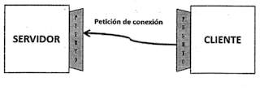
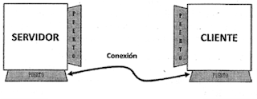

Programación de aplicaciones con sockets
¿Qué es un socket?
Un socket (enchufe), es un método para la comunicación entre un programa del cliente y un programa del servidor en una red, se define, por tanto, como el punto final en una conexión.
Este mecanismo surge a principios de los 80 con el sistema Unix de Berkeley, para proporcionar un medio de comunicación entre procesos y presentan la misma funcionalidad que tiene la comunicación por correo o por teléfono (de un buzón se extraen mensajes completos, mientras que el teléfono permite el envío de flujos de información que no tienen una estructura claramente definida), es decir permiten que un proceso hable (emita o reciba información) con otro incluso estando estos en distintas máquinas. Esta característica de ínterconectividad hace que el concepto de socket sea de gran utilidad.
Principios de funcionamiento
Un socket queda definido por un par de direcciones IP local y remota, un protocolo de transporte y un par de números de puerto local y remoto. Para que dos programas puedan comunicarse entre sí es necesario que se cumplan ciertos requisitos:
- Que un programa sea capaz de localizar al otro
- Que ambos programas sean capaces de intercambiarse cualquier secuencia de octetos, es decir, datos relevantes a su finalidad.
Para ello son necesarios los tres recursos que originan el concepto de socket:
- Un protocolo de comunicaciones, que permite el intercambio de octetos.
- Un par de direcciones del Protocolo de Red (Dirección IP, si se utiliza el Protocolo TCP/IP), que identifica la computadora de origen y la remota.
- Un par de números de puerto, que identifica a un programa dentro de cada computadora.
Los sockets permiten implementar una arquitectura cliente-servidor o peer to peer. La comunicación debe ser iniciada por uno de los programas que se denomina programa cliente. El segundo programa espera a que otro inicie la comunicación, por este motivo se denomina programa servidor.
Un socket es un proceso o hilo existente en la máquina cliente y en la máquina servidora, que sirve en última instancia para que el programa servidor y el cliente lean y escriban la información. Esta información será la transmitida por las diferentes capas de red.
El programa cliente conoce el nombre de la máquina en la que se ejecuta el servidor y el número de puerto por el que escucha las peticiones. Para realizar una solicitud de conexión, el cliente realiza la petición a la máquina a través del puerto.
Si todo va bien, el servidor acepta la conexión. Una vez aceptada, el servidor obtiene un nuevo socket sobre un puerto diferente. Esto se debe a que por un lado debe seguir atendiendo las peticiones de conexión mediante el socket original y por otro debe antender las necesidades del cliente que se conectó.
En el lado del cliente, si se acepta la conexión, se crea un socket y el cliente puede utilizarlo para comunicarse con el servidor. Este socket utiliza un número de puerto diferente al usado para conectarse al servidor. El cliente y el servidor pueden ahora comunicarse escribiendo y leyendo por sus respectivos sockets.
Tipos de sockets
En la actualidad existen varios tipos de socket y cada uno por lo regular se asocia a un tipo de protocolo, por ejemplo:
- SOCK_STREAM: está asociado al protocolo TCP, este brinda seguridad en la transmisión de datos, seguridad en la recepción, en la integridad y en la secuencia, entre otros.
- SOCK_DGRAM: está asociado al protocolo UDP, e indica que los paquetes viajarán en tipo datagramas, el cual tiene una comunicación asíncrona.
Propiedades de los sockets
Las propiedades de un socket dependen de las características del protocolo en el que se implementan. Generalmente la comunicación con sockets se realiza mediante un protocolo de la familia TCP/IP (Protocolo de Control de Transmisión/Protocolo de Internet). Los dos más utilizados son: TCP (Protocolo de Control de Transmisión) y UDP (Protocolo de Datagrama de Usuario).
Cuando se implementan con el protocolo TCP, los sockets tienen las siguientes propiedades:
- Orientado a conexión.
- Se garantiza la transmisión de todos los octetos sin errores ni omisiones.
- Se garantiza que todo octeto llegará a su destino en el mismo orden en que se ha transmitido. Estas propiedades son muy importantes para garantizar la corrección de los programas que tratan la información.
Por otra parte, el protocolo UDP es un protocolo no orientado a la conexión. Sólo se garantiza que si un mensaje llega, llegue bien. En ningún caso se garantiza que llegue o que lleguen todos los mensajes en el mismo orden que se mandaron. Esto lo hace adecuado para el envío de mensajes frecuentes pero no demasiado importantes.